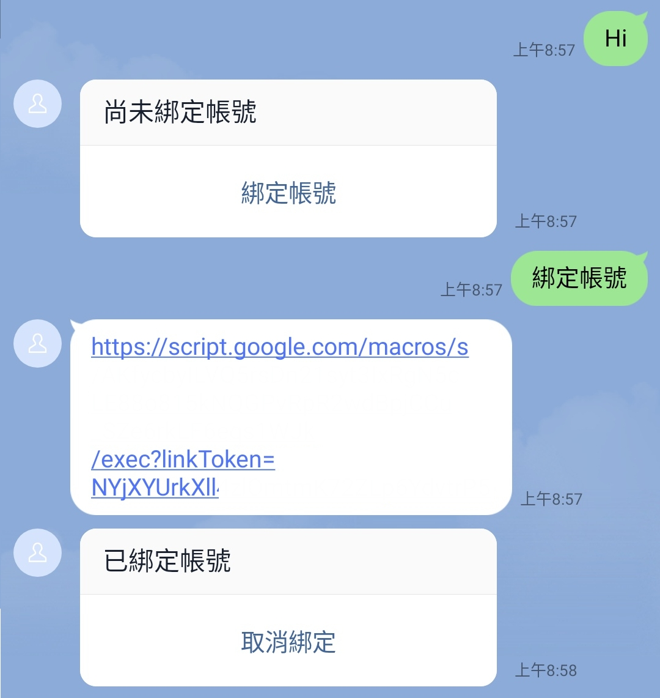
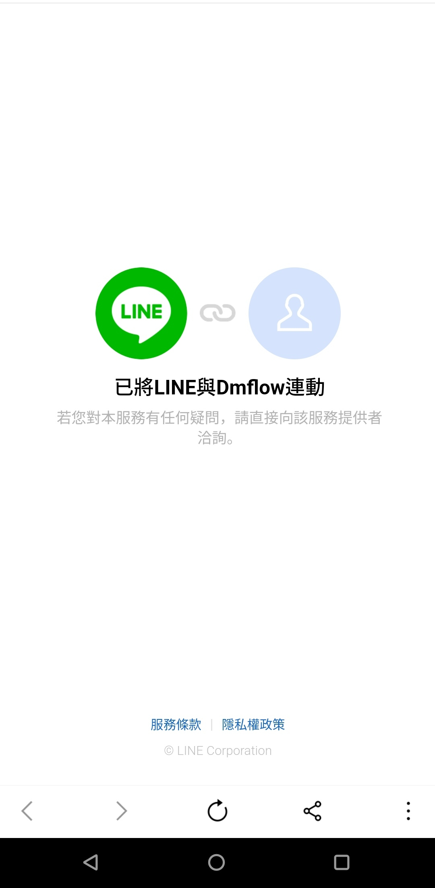

如何快速建立連結
此範例因為測試需求，使用的是Google Apps Script，如果要正式使用可使用其他方式如firebase或自定義伺服器完成以下教學。
大致流程如下：
sequenceDiagram
User->>DMflow: 您好
DMflow-->>User: 您好，您尚未綁定帳號
User->>DMflow: 綁定帳號
DMflow-->>User: 提供綁定帳號網址
User->>Login: 點擊綁定帳號網址
User->>Login: 輸入帳號密碼
Login-->>User: 資訊正確提供LINE帳號連接網址
User->>Login: 點擊LINE帳號連接網址
Login->>LINE: 告訴LINE這個使用者要綁定
LINE-->>DMflow: accountLink event
DMflow->>User: 告知使用者已經綁定帳號
步驟一：建立需求的檔案
首先我們先建立index.html
<!DOCTYPE html>
<html>
<head>
<base target="_top">
<style>
body {
font-family: Arial, sans-serif;
text-align: center;
padding: 20px;
}
h1 {
margin-top: 0;
}
input[type="text"],
input[type="password"] {
width: 200px;
padding: 10px;
margin: 10px;
}
button {
padding: 10px 20px;
background-color: #4CAF50;
color: white;
border: none;
cursor: pointer;
}
button:hover {
background-color: #45a049;
}
</style>
</head>
<body>
<h1>Login</h1>
<input type="text" id="username" placeholder="Username" autocomplete="off" required><br>
<input type="password" id="password" placeholder="Password" autocomplete="off" required><br>
<input type="hidden" id="linkToken" value=""><br>
<button onclick="login()">Login</button>
<a href="#" id="account-link" style="display: none;">Account Link</a>
<script>
function login() {
var username = document.getElementById("username").value;
var password = document.getElementById("password").value;
var linkToken = document.getElementById("linkToken").value;
}
</script>
</body>
</html>
程式碼.gs
function doGet(request) {
return HtmlService.createHtmlOutputFromFile("index");
}
步驟二：開始撰寫gs
我們需要login的邏輯並開始撰寫
先開啟Google spreadsheets並建立欄位為username, password, nonce, user_id
可以填寫你要的使用者，我在裡面建立了帳號為howard、密碼為123456
| username | password | nonce | user_id |
|---|---|---|---|
| howard | 123456 |
根據網址，即可拿到你的Spreadsheet的ID，記得如果只要使用Login頁面，可以將存取只能給自己使用，但因為此範例最後面需要用到DMflow的資源節點，所以需要開放給所有知道連結的人。
https://docs.google.com/spreadsheets/d/{{你的Spreadsheet ID}}/edit#gid=0
function login(username, password, linkToken) {
var id = '{{你的Spreadsheet ID}}';
var spreadsheet = SpreadsheetApp.openById(id);
var sheet = spreadsheet.getSheets()[0];
var data = sheet.getDataRange().getValues();
for (var i = 1; i < data.length; i++) {
var storedUsername = data[i][0];
var storedPassword = data[i][1];
if (storedUsername === username && storedPassword == password) {
var nonce = createNonce(16);
var cell = sheet.getRange("C" + (i + 1));
cell.setValue(nonce);
var redirectUrl = `https://access.line.me/dialog/bot/accountLink?linkToken=${linkToken}&nonce=${nonce}`;
return { success: true, redirectUrl };
}
}
return { sucess: false };
}
function createNonce(length) {
var text = "";
var possible = "ABCDEFGHIJKLMNOPQRSTUVWXYZabcdefghijklmnopqrstuvwxyz0123456789";
for (var i = 0; i < length; i++) {
text += possible.charAt(Math.floor(Math.random() * possible.length));
}
return text;
}
並更改index.html
<script>
function login() {
var username = document.getElementById("username").value;
var password = document.getElementById("password").value;
var linkToken = document.getElementById("linkToken").value;
google.script.run.withSuccessHandler(handleLoginResult).login(username, password, linkToken);
}
function handleLoginResult(result) {
if(result){
if(result.success){
alert("Login successful!");
if(result.redirectUrl) {
var linkElement = document.getElementById('account-link');
linkElement.style.display = "inline";
linkElement.href = result.redirectUrl;
}
}else {
alert("Login failed! Please check your credentials.");
}
}
}
google.script.url.getLocation(function(location) {
var hiddenValue = location.parameter["linkToken"];
document.getElementById("linkToken").value = hiddenValue;
});
</script>
即可完成簡單的登入頁面。
此為index.html完整版
<!DOCTYPE html>
<html>
<head>
<base target="_top">
<style>
body {
font-family: Arial, sans-serif;
text-align: center;
padding: 20px;
}
h1 {
margin-top: 0;
}
input[type="text"],
input[type="password"] {
width: 200px;
padding: 10px;
margin: 10px;
}
button {
padding: 10px 20px;
background-color: #4CAF50;
color: white;
border: none;
cursor: pointer;
}
button:hover {
background-color: #45a049;
}
</style>
</head>
<body>
<h1>Login</h1>
<input type="text" id="username" placeholder="Username" autocomplete="off" required><br>
<input type="password" id="password" placeholder="Password" autocomplete="off" required><br>
<input type="hidden" id="linkToken" value=""><br>
<button onclick="login()">Login</button>
<a href="#" id="account-link" style="display: none;">Account Link</a>
<script>
function login() {
var username = document.getElementById("username").value;
var password = document.getElementById("password").value;
var linkToken = document.getElementById("linkToken").value;
google.script.run.withSuccessHandler(handleLoginResult).login(username, password, linkToken);
}
function handleLoginResult(result) {
if(result){
if(result.success){
alert("Login successful!");
if(result.redirectUrl) {
var linkElement = document.getElementById('account-link');
linkElement.style.display = "inline";
linkElement.href = result.redirectUrl;
}
}else {
alert("Login failed! Please check your credentials.");
}
}
}
google.script.url.getLocation(function(location) {
var hiddenValue = location.parameter["linkToken"];
document.getElementById("linkToken").value = hiddenValue;
});
</script>
</body>
</html>
步驟三：寫入userId
有兩種方式寫入userId
- 1.直接在轉login的頁面的時候，可以直接攜帶userId
- 2.透過DMflow資源節點去觸發寫入userId
在此舉立第二種範例。
我們在 程式碼.gs新增以下程式碼
將新增一個資源。
{
"action": "updateUserId",
"userId": "xxxx",
"nonce": "xxxx"
}
function writeUserId(userId, nonce) {
var id = '{{你的Spreadsheet ID}}';
var spreadsheet = SpreadsheetApp.openById(id);
var sheet = spreadsheet.getSheets()[0];
var data = sheet.getDataRange().getValues();
for (var i = 1; i < data.length; i++) {
var storedNonce = data[i][2];
if (storedNonce === nonce) {
var cell = sheet.getRange("D" + (i + 1));
cell.setValue(userId);
return { success: true };
}
}
return { sucess: false };
}
function doPost(e) {
var param = JSON.parse(e.postData.contents);
let action = param.action;
var result = {};
if (action === 'updateUserId') {
let userId = param.userId;
let nonce = param.nonce;
result = writeUserId(userId, nonce);
}
return ContentService.createTextOutput(JSON.stringify(result))
.setMimeType(ContentService.MimeType.JSON);
}
於是可以先新增部屬作業。
步驟四：回到DMflow做設定
我們先來看最終成果圖。

首先現在"使用者參數"新增一個nonce作為是否已經連接帳號的根據。並在"機器人參數"新增lineToken，數值為Bearer {{line access token}}
先建立變數節點
- link_token: 屬性: string，用途是呼叫LINE linkToken後需要回傳linkToken
- nonce: 屬性: string，用於查詢user Spreadsheet的nonce去比對帳號。
- user_id: 屬性: string，用於修改user Spreadsheet的userId。
在資源節點新增兩個分別是
- line_linkToken 用於綁定帳號
因預設為HTTPS所以不用打https://
Request URL: api.line.me/v2/bot/user/${#sys_user.userId}/linkToken
Method: POST
Content-Type: JSON
Headers: Authorization: config.lineToken
RESPONSE
{
"linkToken": "xxxx"
}
- updateUserId 用於更新userId
Request URL: script.google.com/macros/s/{{生產部屬的ID}}/exec
Method: POST
Content-Type: JSON
REQUEST PAYLOAD:
{
"action": "updateUserId",
"nonce": "",
"userId": ""
}
請求參數新增nonce和user_id(請求參數鍵要改成userId，否則無法取代REQUEST PAYLOAD的userId)
RESPONSE
{
"success": true or false
}
填寫完後點擊新增或修改，重進一次修改資源，可以點擊測試直接測試該資源。
- 回到DMflow圖形
每個節點的用途可以從這裡了解。DMflow 機器人對話流程
ID 4 回覆節點 用途：為了回覆使用者未綁定帳號的問句。
文本：尚未綁定帳號
選項：綁定帳號(回傳文本:綁定帳號)
Start -> ID 4 條件節點 用途：平台必須是LINE且nonce屬於尚未填充的狀態。
條件為
sys_user.platform = constant @line
user.nonce 未填充
ID 5 資源節點 用途：向LINE Server去拿取linkToken。
選取line_linkToken
回傳值：
link_token->conversation.linkToken
ID 4 -> ID 5 條件節點 用途：假設回覆等於綁定帳號則移動到綁定帳號節點。
條件為
query = constant 綁定帳號
ID 8 回覆節點 用途：拿到linkToken後顯示前端login頁面，並帶linkToken數值。生產部屬的ID為自己的ID請勿複製貼上。
文本：https://script.google.com/macros/s/{{生產部屬的ID}}/exec?linkToken=${#conversation.linkToken}
ID 5 -> ID 8 條件節點 用途：假設拿到linkToken直接前往回覆輸出連結。
條件為無條件
ID 16 變數節點 用途：我們接收到Account Link事件後可以拿到nonce。
user nonce 字串取代 前綴:conversation,目標:_message.payload.nonce
ID 8 -> ID 16 條件節點 用途：當前端登入完成且完成帳號連結後，LINE Server會提供給DMflow 事件為Account Link的事件。
條件為
conversation._message.type = constant accountLink
ID 19 資源節點 用途：調用updateUserId將nonce相符的帳號更新他的userId
選取updateUserId
參數：
nonce->user.nonce
user_id->sys_user.userId
回傳值：
success->conversation.success
ID 16 -> ID 19 條件節點 用途：Account Link事件後可以拿到nonce和result，可以先判斷result是否為ok或failed，但此範例不判斷。 條件為無條件
ID 9 回覆節點 用途：最後需要顯示解除綁定的訊息。
文本：已綁定帳號
選項：取消綁定(回傳文本:取消綁定)
Start -> ID 9 條件節點 用途：使用者回答取消綁定且渠道為LINE的時候觸發
條件為
query = constant 取消綁定
sys_user.platform = constant @line
ID 11 變數節點 用途：將user.nonce清除
user nonce 字串清空
ID 9 -> ID 11 條件節點 用途：當使用者選擇選項為取消綁定或直接說出取消綁定的時候觸發。
條件為
query = constant 取消綁定
ID 13 回覆節點 用途：用於回覆使用者綁定已取消了，下一次使用者需要重新綁定才能繼續問話。
文本：綁定已取消
關閉等待用戶回覆
步驟五：測試
在LINE整合填寫Channel ID和secret和access token，可參考DMflow LINE整合
並根據開發版、生產版做發布即可測試。可參考DMflow 發布
成果：

點擊連結後跳去登入頁面。

登入成功後顯示Account Link的連結

點完連結後，會出現連接畫面，此時LINE Server會丟account Link event給DMflow，DMflow會顯示以綁定帳號。

最後若是此範例完畢，記得管理部屬作業將該程序封存，讓程序下線，避免已經綁定信用卡的使用者造成不必要的費用問題。
聯絡資訊
DMflow.chat 官網: DMflow.chat (於2024-05-18更改網域至DMflow.chat，此文檔將不再維護請至DMflow.chat文檔查看新版文檔)